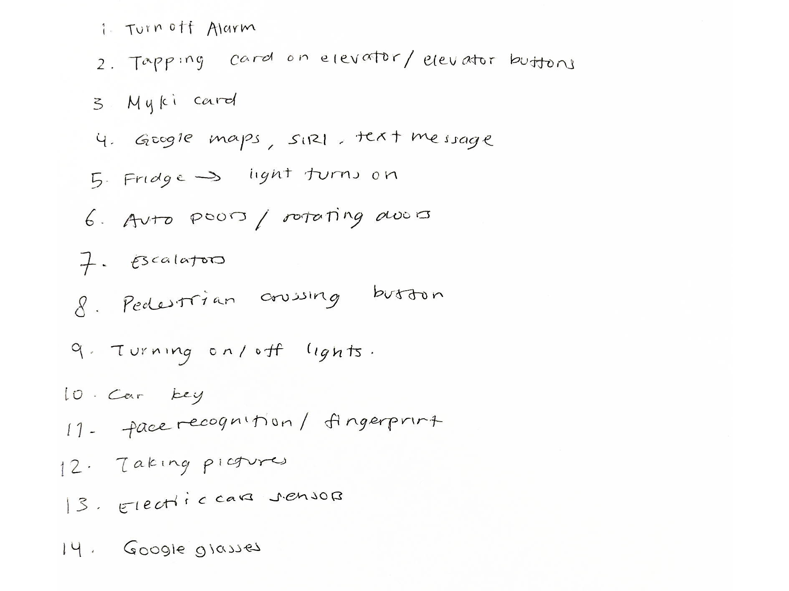
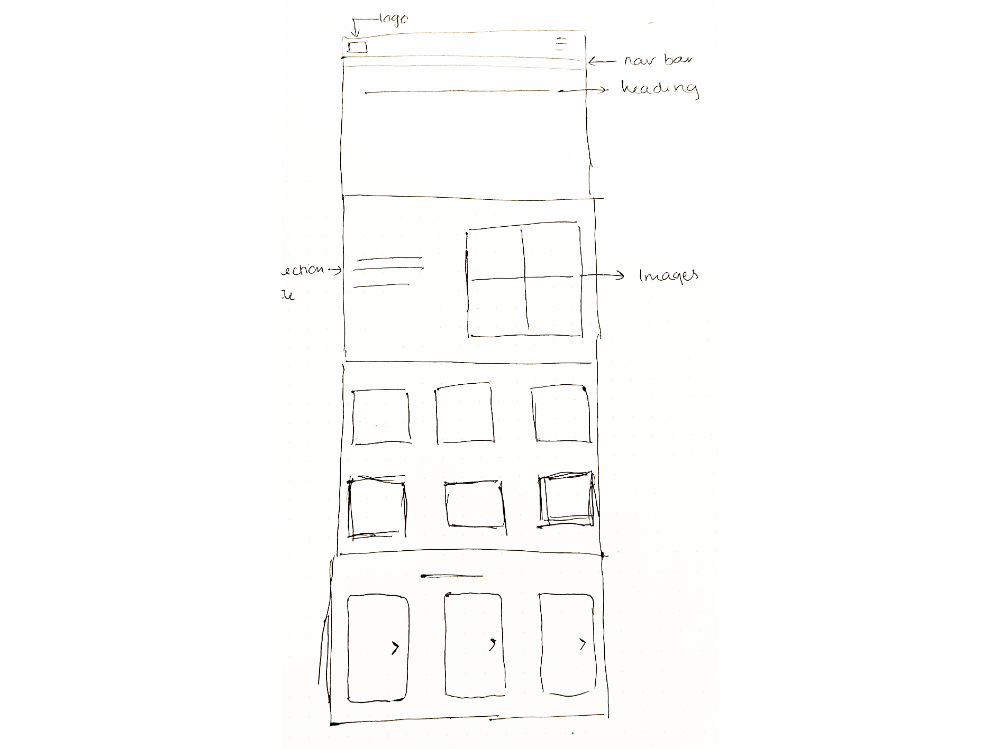
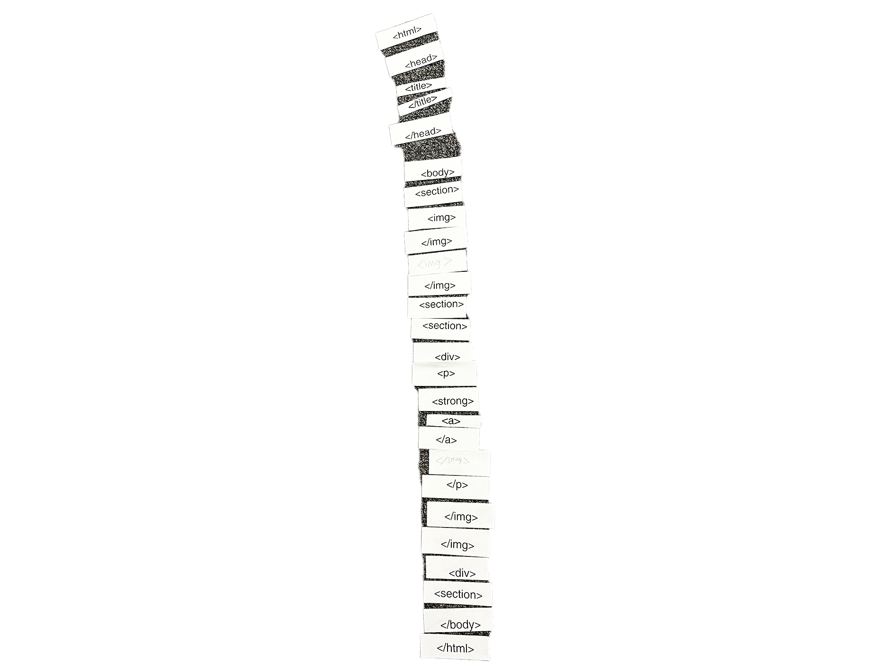
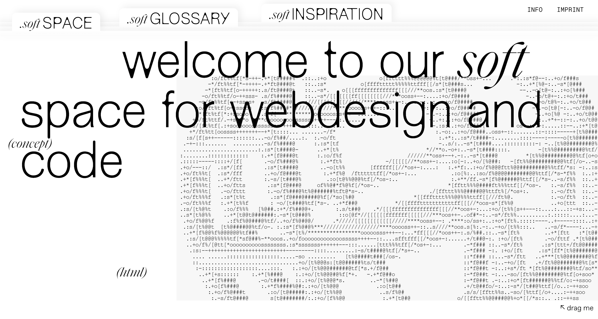
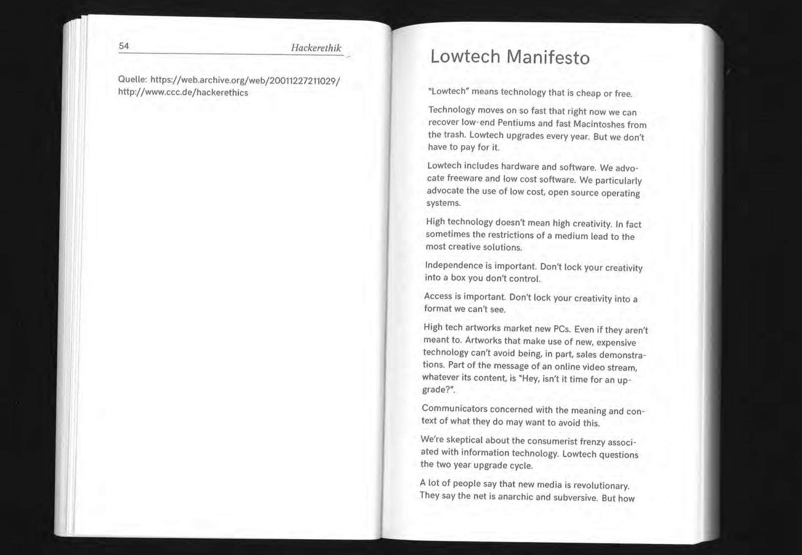

Week 1
Wot is Interactive Media?
Interactive media is related to...
Common Interactions with Interfaces:
Gestures
In digital interaction...
Making a gesture that doesn't exist yet:
Lights that change colour...

The Anatomy of a Webpage
A webpage consists of key elements like the header...
Making a Website with my Team:
TAG! (HTML Tag Relay):
Making a Website!:

Interests: The interactive folder layout, thoughtful use of spacing...
Generative Practice: The State of the Art
Wired ArticleDiscusses how generative systems, algorithms...

Low tech Manifesto
High-tech artworks often serve as a means of promoting new technologies...
